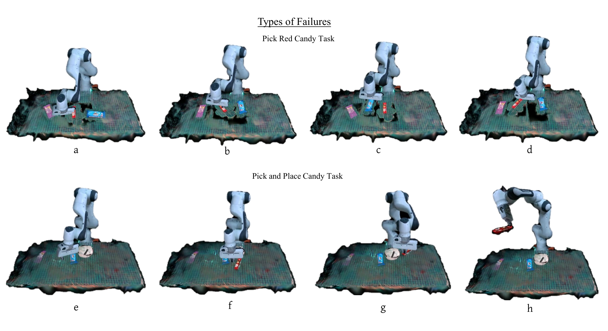
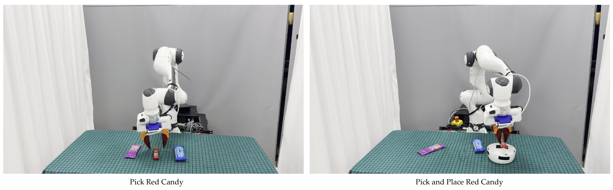

A principled safety watchdog that learns a Lipschitz-continuous reach-avoid Q-function over a Gaussian-Splatting digital twin, detects imminent failure of flow-matching and diffusion policies in real time, and recovers via gradient ascent on the safety landscape.
University of New Hampshire
Recent imitation-learning algorithms — flow matching and diffusion policies — achieve remarkable performance on complex manipulation, yet remain extremely sensitive to initial conditions and accumulate compounding error, making field deployment risky. A prerequisite for safe deployment is enabling the policy to determine whether it can complete the task the way it was learned from demonstrations. TAIL-Safe identifies, for any trained IL policy, a safe set from which it empirically succeeds; it learns a Lipschitz-continuous Q-value function that maps state-action pairs to a long-term safety score based on three short-term task-agnostic criteria — visibility, recognizability, and graspability. When the nominal action exits the safe set, a recovery mechanism inspired by Nagumo's tangentiality theorem performs gradient ascent on Q. A Gaussian-Splatting digital twin enables systematic collection of failure data without risk to physical hardware. On a Franka Emika robot, flow-matching policies that fail under run-time perturbations achieve consistent task success when guided by TAIL-Safe.
TAIL-Safe answers three questions about an IL policy at run time: what can fail, where failure may occur, and how to avoid it.
A Gaussian-Splatting reconstruction of the workspace acts as a live visual mirror. Object Gaussians are pose-updated at 10 Hz from a wrist RGB-D stream.
Per-step task-agnostic scores: sfov (visibility), srec (recognizability via DINOv2 + Mahalanobis), sgrasp (graspability).
An MLP fuses the criteria with context-dependent weights (visibility dominates during approach; graspability near contact). 99.3 % trajectory accuracy vs. 43.7 % with equal weights.
A Lipschitz-continuous network trained on rollouts from the twin. Zero-superlevel set = empirical safe set. Energy-shaping loss prevents flat regions.
When Q(s,a) < 0, projected gradient ascent on Q with bounded step size — Nagumo-style. Mean 2.3 iterations; 20 Hz on a single GPU.
Drop-in safety filter for any deterministic visuomotor policy. 2.8 ms per timestep; 350 Hz capable on an RTX 4090.



Evaluated on a Franka Emika robot for two real-world tasks (Candy Pick, Pick-and-Place) and on 270 simulated rollouts in the digital twin.



Each video below illustrates a specific aspect of the method, from data collection in the Gaussian-Splatting twin to closed-loop recovery on the real Franka.
A walkthrough of the TAIL-Safe pipeline: digital-twin construction, safety prediction, recovery, and real-robot deployment.
Compiled overview of the framework and live experiments.
A human operator perturbs the robot mid-task. TAIL-Safe detects the unsafe state and steers the end-effector back to a safe configuration without aborting the task.
A person physically interrupts the trajectory; the safety filter triggers a recovery action and the policy resumes.
The robot is teleoperated off-trajectory with a SpaceMouse; TAIL-Safe brings it back and the task completes.
Severe perturbations on the real robot. The base policy fails; TAIL-Safe correctly flags these states as unsafe in real time.
Out-of-distribution scene; base policy diverges, TAIL-Safe detects the failure boundary.
A second OOD configuration where the unsafe state is correctly flagged.
Successful pick-and-place rollouts in the photo-realistic Gaussian-Splatting digital twin, used to train WeightNet and the reach-avoid Q-function. The last clip shows an intentionally failed rollout used to populate the unsafe class.
Safe demonstration collected inside the GS twin.
Variation in object placement within ±5 cm.
Variation in orientation within ±30°.
An intentionally failed trajectory used to label the unsafe region of state space.
If you find TAIL-Safe useful for your research, please consider citing: